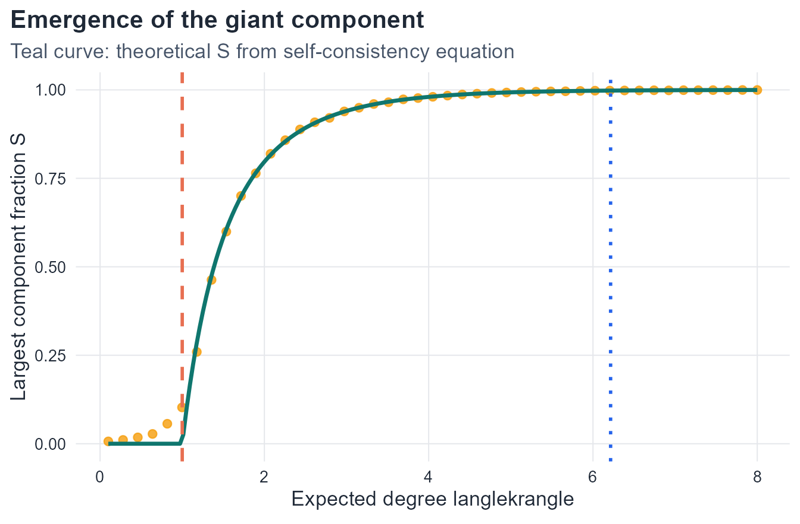

5 The Evolution of Random Graphs
Thresholds, phase transitions, and the emergence of large-scale connectivity
5.1 Introduction
Chapter 3 described static properties of the Erdős–Rényi ensemble at a fixed edge probability p: the degree distribution, expected average degree, and clustering coefficient. This chapter adopts a dynamic viewpoint. Instead of fixing p, we ask how the graph changes as p increases from 0 to 1, and in particular how global connectivity emerges from local random wiring.
The central result is that this process is not gradual and undifferentiated — it is organized by two sharp threshold phenomena (Bollobás, 2001; Erdős & Rényi, 1960):
- Near \langle k\rangle = 1, a giant component — a connected subgraph containing a positive fraction of all vertices — emerges discontinuously.
- Near \langle k\rangle = \ln N, the graph becomes fully connected with high probability.
These two events are separated by a wide intermediate range in which the graph has a macroscopic backbone but also retains isolated vertices and small disconnected pieces. Understanding both thresholds, and the structural regimes between them, is the goal of this chapter.
The theory of random graph evolution was initiated by Erdős & Rényi (1960) and developed rigorously by Bollobás (2001). The network science perspective is covered in Newman (2010, Ch. 12) and Barabási & Pósfai (2016, Ch. 3).
5.2 Learning goals
By the end of this chapter, a student should be able to:
- define connected components precisely and characterise their partition structure,
- state the giant component and connectedness thresholds and express each in terms of p and \langle k\rangle,
- derive the self-consistency equation S = 1 - e^{-\langle k\rangle S} from a probabilistic argument,
- carry out the near-threshold expansion and obtain S \approx 2(\langle k\rangle - 1),
- distinguish the four structural regimes and describe the component structure in each,
- connect all theoretical results to simulation in
Rand interpret finite-size effects.
5.3 Connectedness and components
Definitions
Definition 5.1 Let G = (V, E) be an undirected graph. A connected component of G is a maximal connected subgraph: a subgraph H \subseteq G that is connected and to which no further vertex of G can be added while preserving connectedness.
The connected components of G partition the vertex set V: every vertex belongs to exactly one component, because if a vertex belonged to two distinct components, those components would share a vertex, contradicting their maximality. An isolated vertex — one with degree zero — forms a component of size 1.
The size of a component is its number of vertices, |V(H)|.
NotePartition property
Because components are maximal, the component decomposition is unique and the components tile V without overlap. This is the key structural fact that makes component size a well-defined global quantity.
Component structure example
5.4 The giant component
Definition 5.2 Let C_{\max}(G_N) denote the largest connected component of a graph on N vertices. A sequence of random graphs contains a giant component if
\frac{|C_{\max}(G_N)|}{N} \;\xrightarrow{N\to\infty}\; c > 0.
The term giant is reserved for components that constitute a positive fraction of all vertices in the large-N limit. Every finite graph trivially has a largest component, but that component is giant only when it grows proportionally with the system size. Before the giant component emerges, all components have sizes of order O(\log N) or smaller.
5.5 Evolution of a random graph
Consider G(N,p) with N fixed and p increasing from 0 to 1. The evolution passes through four qualitatively distinct structural regimes, controlled by the expected degree
\langle k\rangle = p(N-1).
The four regimes
Definition 5.3 Subcritical regime: \langle k\rangle < 1. No giant component exists. Almost all connected components have size O(\log N). The largest component has size of order \log N (Bollobás, 2001, Ch. 6). Isolated vertices are common.
Definition 5.4 Critical regime: \langle k\rangle \approx 1. The phase transition. The largest component has size of order N^{2/3} — macroscopic, but still a vanishing fraction of N (Erdős & Rényi, 1960). This is the boundary at which the giant component is born.
Definition 5.5 Supercritical regime: \langle k\rangle > 1. A unique giant component exists, containing a fraction S > 0 of all vertices. The remaining vertices form many small finite components, predominantly tree-like near the threshold. The giant component itself contains cycles.
Definition 5.6 Connected regime: \langle k\rangle \approx \ln N. The graph is connected with high probability. More precisely, for p = (\ln N + c)/N with c a constant, the probability that G(N,p) is connected converges to e^{-e^{-c}} as N \to \infty (Erdős & Rényi, 1960; Bollobás, 2001, Ch. 7).
ImportantTwo distinct thresholds
The giant component emerges at \langle k\rangle = 1 (p_c \approx 1/N). The graph becomes fully connected at \langle k\rangle \approx \ln N (p \approx \ln N / N). Between these thresholds, the graph has a macroscopic giant component but also retains isolated vertices and small disconnected pieces. A graph with a giant component is not necessarily connected.
Monotone evolution

5.6 The self-consistency equation
Derivation
The fraction S of vertices in the giant component satisfies a self-consistency equation that can be derived from first principles (Newman, 2010, Ch. 12).
A vertex v belongs to the giant component if and only if at least one of its neighbors also belongs to the giant component. Equivalently, v does not belong to the giant component if and only if every one of its neighbors also lies outside the giant component.
Let u be a neighbor of v, reached by following a random edge. The probability that u does not lead to the giant component is e^{-\langle k\rangle S}, derived as follows. Following an edge from v to u means u has at least one neighbor (v), so the remaining degree of u (the number of further neighbors) is approximately Poisson(\langle k\rangle) in the sparse large-N limit. Each of those further neighbors independently fails to reach the giant with probability 1-S. Therefore the probability that u itself does not reach the giant is
\sum_{j=0}^{\infty} e^{-\langle k\rangle}\frac{\langle k\rangle^j}{j!}(1-S)^j = e^{-\langle k\rangle S}.
Since v has Poisson(\langle k\rangle) neighbors (in the sparse limit), each independently failing to reach the giant with probability e^{-\langle k\rangle S}, the probability that v itself is not in the giant component is e^{-\langle k\rangle \cdot S}… but S here is the probability that a neighbor reached by a random edge belongs to the giant, which by the self-consistency argument equals S itself. Therefore the probability that v lies outside the giant is e^{-\langle k\rangle S}, giving
\boxed{S = 1 - e^{-\langle k\rangle S}.}
NoteExistence of a positive solution
Define f(S) = 1 - e^{-\langle k\rangle S}. Note f(0) = 0, so S = 0 is always a solution. The derivative at S = 0 is f'(0) = \langle k\rangle. A positive fixed point exists if and only if f'(0) > 1, i.e., \langle k\rangle > 1. This is the giant component threshold. When \langle k\rangle \leq 1, the only solution is S = 0; when \langle k\rangle > 1, a unique positive solution S^* \in (0,1) exists (Bollobás, 2001, Ch. 5).
Near-threshold expansion
When \langle k\rangle = 1 + \varepsilon with \varepsilon > 0 small, the positive solution S^* is also small. Expand the exponential to second order in S:
S = 1 - e^{-\langle k\rangle S} \approx 1 - \left(1 - \langle k\rangle S + \frac{\langle k\rangle^2 S^2}{2} - \cdots\right) = \langle k\rangle S - \frac{\langle k\rangle^2 S^2}{2} + O(S^3).
Rearranging (and discarding O(S^3) since S is small):
S - \langle k\rangle S + \frac{\langle k\rangle^2 S^2}{2} \approx 0 \implies S\!\left(1 - \langle k\rangle + \frac{\langle k\rangle^2 S}{2}\right) = 0.
The non-zero solution satisfies \frac{\langle k\rangle^2 S}{2} \approx \langle k\rangle - 1 = \varepsilon, giving
\boxed{S \approx \frac{2(\langle k\rangle - 1)}{\langle k\rangle^2} \approx 2(\langle k\rangle - 1) \qquad \text{as } \langle k\rangle \downarrow 1^+.}
The transition is continuous: the giant component size grows linearly with the distance \varepsilon = \langle k\rangle - 1 from the threshold. There is no jump discontinuity in S — the giant component emerges gradually from zero.
TipPhysical interpretation
The linear growth S \approx 2(\langle k\rangle - 1) means that doubling the excess degree doubles the fraction of vertices absorbed into the giant component, at least near the threshold. Far above the threshold, S saturates toward 1 as the graph approaches full connectivity.
Connectedness threshold
Connectivity requires more than a giant component: every vertex must be reachable from every other vertex. The binding constraint is isolated vertices. A vertex v is isolated if none of its N-1 potential edges is present, which happens with probability (1-p)^{N-1}. The expected number of isolated vertices is
\mathbb{E}[\text{isolated}] = N(1-p)^{N-1} \approx N e^{-p(N-1)} = N e^{-\langle k\rangle}.
Setting this equal to 1 gives \langle k\rangle = \ln N, or equivalently p = \ln N / N. This is the connectedness threshold: below it, isolated vertices are expected and the graph is disconnected; above it, isolated vertices disappear and the graph becomes connected with high probability.
More precisely (Erdős & Rényi, 1960; Bollobás, 2001, Ch. 7), for p = (\ln N + c)/N:
P(G(N,p) \text{ is connected}) \;\xrightarrow{N\to\infty}\; e^{-e^{-c}}.
Setting c = 0 gives P \to e^{-1} \approx 0.368; the graph is connected with probability 1/2 when c = \ln\ln 2 \approx -0.37.
5.7 Numerical exploration
Show code
set.seed(2026)
n <- 500
k_grid <- seq(0.1, 8.0, length.out=45)
p_grid <- k_grid / (n - 1)
reps <- 80
evolution_tbl <- map_dfr(p_grid, function(p) {
map_dfr(seq_len(reps), function(rep_id) {
g <- sample_gnp(n=n, p=p, directed=FALSE, loops=FALSE)
comp <- components(g)$csize
tibble(
p = p,
mean_degree = p*(n-1),
rep = rep_id,
largest_component_fraction = max(comp)/n,
number_of_components = length(comp),
isolated_fraction = sum(comp==1)/n,
connected_indicator = as.integer(length(comp)==1)
)
})
})
evolution_summary <- evolution_tbl |>
group_by(p, mean_degree) |>
summarise(
largest_component_fraction = mean(largest_component_fraction),
number_of_components = mean(number_of_components),
isolated_fraction = mean(isolated_fraction),
connected_probability = mean(connected_indicator),
connected_probability_se = sqrt(connected_probability*(1-connected_probability)/n()),
.groups = "drop"
)
iso_fit <- isoreg(evolution_summary$mean_degree,
evolution_summary$connected_probability)
evolution_summary$connected_probability_iso <- iso_fit$yfGiant component fraction
Show code
# Theoretical S from self-consistency equation
solve_S <- function(k_mean, tol=1e-8, max_iter=1000) {
if (k_mean <= 0) return(0)
S <- 0.5
for (i in seq_len(max_iter)) {
S_new <- 1 - exp(-k_mean * S)
if (abs(S_new - S) < tol) return(S_new)
S <- S_new
}
S
}
theory_tbl <- tibble(
mean_degree = seq(0.1, 8.0, length.out=200),
S_theory = sapply(mean_degree, solve_S)
)
ggplot(evolution_summary, aes(x=mean_degree, y=largest_component_fraction)) +
geom_point(color=course_cols$gold, size=2.1, alpha=0.8) +
geom_line(data=theory_tbl, aes(x=mean_degree, y=S_theory),
color=course_cols$teal, linewidth=1.2) +
geom_vline(xintercept=1, color=course_cols$coral,
linewidth=1.0, linetype=2) +
geom_vline(xintercept=log(n), color=course_cols$blue,
linewidth=1.0, linetype=3) +
labs(title="Emergence of the giant component",
subtitle="Teal curve: theoretical S from self-consistency equation",
x=expression(paste("Expected degree ", langle*k*rangle)),
y="Largest component fraction S")
Connectedness probability
Show code
ggplot(evolution_summary, aes(x=mean_degree)) +
geom_ribbon(
aes(ymin=pmax(connected_probability - 1.96*connected_probability_se, 0),
ymax=pmin(connected_probability + 1.96*connected_probability_se, 1)),
fill=course_cols$blue, alpha=0.12) +
geom_point(aes(y=connected_probability), color=course_cols$gold, size=1.9) +
geom_line(aes(y=connected_probability_iso), color=course_cols$coral, linewidth=1.2) +
geom_vline(xintercept=1, color=course_cols$coral,
linewidth=1.0, linetype=2) +
geom_vline(xintercept=log(n), color=course_cols$blue,
linewidth=1.0, linetype=3) +
labs(title="Connectedness probability",
subtitle=sprintf("N = %d; dashed = giant threshold; dotted = connectedness threshold (ln N = %.2f)", n, log(n)),
x=expression(paste("Expected degree ", langle*k*rangle)),
y="P(connected)")
The two plots together make the structural distinction explicit: the giant component fraction begins rising sharply near \langle k\rangle = 1, while the connectedness probability remains near zero until \langle k\rangle \approx \ln N \approx 6.2 for N = 500.
5.8 Summary of regimes
| Regime | Condition | Largest component | Isolated vertices | Connected? |
|---|---|---|---|---|
| Subcritical | \langle k\rangle < 1 | O(\log N) | Common | No |
| Critical | \langle k\rangle \approx 1 | O(N^{2/3}) | Present | No |
| Supercritical | 1 < \langle k\rangle < \ln N | \Theta(N) | Decreasing | No |
| Connected | \langle k\rangle \gtrsim \ln N | N | Absent (w.h.p.) | Yes |
5.9 Core formulas
ImportantSummary
| Result | Formula |
|---|---|
| Giant-component threshold | \langle k\rangle = 1, i.e., p_c \approx 1/N |
| Self-consistency equation | S = 1 - e^{-\langle k\rangle S} |
| Near-threshold size | S \approx 2(\langle k\rangle - 1) for \langle k\rangle \downarrow 1^+ |
| Connectedness threshold | \langle k\rangle \approx \ln N, i.e., p \approx \ln N/N |
| Isolated vertex count | \mathbb{E}[\text{isolated}] \approx N e^{-\langle k\rangle} |
5.10 In-class questions
- Why do the connected components of a graph partition the vertex set?
- A graph has 1000 vertices and its largest component contains 600. Is this a giant component? Justify using the definition.
- Why does f'(0) > 1 imply the existence of a positive fixed point of f(S) = 1 - e^{-\langle k\rangle S}?
- Why does the connectedness threshold depend on \ln N rather than a constant?
- A student observes that a graph with N = 100 and \langle k\rangle = 1.5 has no isolated vertices. Does this mean the graph is connected? Explain.
- In the near-threshold expansion, why is it valid to truncate the Taylor series at second order?
5.11 Exercises
The seven exercises below cover the full theoretical and computational content of this chapter. They require derivation, analysis, and synthesis — not reproduction of lecture material.
Exercise 1. Components, partitions, and the giant component criterion
- Let G = (V,E) be any graph. Prove that the connected components partition V: every vertex belongs to exactly one component. Your proof must use the definition of maximality precisely.
- Let G_N = P_N (the path graph on N vertices). Compute |C_{\max}(G_N)|/N and determine whether P_N contains a giant component in the sense of Definition 5.2.
- Let G_N = \lfloor N/2\rfloor \cdot K_2 (a perfect matching: \lfloor N/2\rfloor disjoint edges). Compute |C_{\max}(G_N)|/N. Does this sequence contain a giant component?
- Construct a sequence of graphs \{G_N\} such that |C_{\max}(G_N)|/N \to 1/3. Is this a giant component? Compare to the Erdős–Rényi case: at what value of \langle k\rangle does the self-consistency equation give S = 1/3?
Exercise 2. The self-consistency equation: analysis and phase transition
The self-consistency equation is S = 1 - e^{-\langle k\rangle S}, with f(S) = 1 - e^{-\langle k\rangle S}.
- Show that S = 0 is always a solution. Show that any other fixed point S^* > 0 satisfies S^* < 1 for any finite \langle k\rangle.
- Prove rigorously that a positive fixed point exists if and only if \langle k\rangle > 1. (Hint: consider the slope f'(0) = \langle k\rangle and the fact that f(S) < S for all S \in (0,1) when \langle k\rangle \leq 1.)
- For \langle k\rangle = 2, find S^* numerically and verify that S^* = 1 - e^{-2S^*}. Repeat for \langle k\rangle \in \{1.5, 3, 5\}. Plot S^* as a function of \langle k\rangle for \langle k\rangle \in [0, 5], overlaying the simulation estimates from Figure 5.1.
- The function \langle k\rangle \mapsto S^*(\langle k\rangle) is continuous and equals zero for \langle k\rangle \leq 1. This continuity is why the transition is called second-order (continuous) rather than first-order (discontinuous). Explain what it would mean physically if S jumped discontinuously at \langle k\rangle = 1.
Exercise 3. Near-threshold expansion
The lecture derives S \approx 2(\langle k\rangle - 1) near \langle k\rangle = 1.
- Carry out the Taylor expansion of e^{-\langle k\rangle S} to third order in S. Show that the correction to the leading term S \approx 2(\langle k\rangle - 1) is of order (\langle k\rangle - 1)^2, so the linear approximation is valid to leading order.
- Write \langle k\rangle = 1 + \varepsilon and expand S^*(\varepsilon) as a power series in \varepsilon: S^* = a_1\varepsilon + a_2\varepsilon^2 + \cdots. Determine a_1 and a_2.
- For N = 1000 and \langle k\rangle = 1.2, compare: (a) the theoretical prediction S \approx 2(\langle k\rangle - 1) = 0.4; (b) the exact numerical solution of the self-consistency equation; and (c) the simulation estimate. Which is more accurate at this distance from the threshold?
- The near-threshold formula is S \approx 2\varepsilon with \varepsilon = \langle k\rangle - 1. The analogous quantity in percolation theory is \varepsilon = p - p_c, where p_c is the critical bond probability. Does the linear scaling S \sim \varepsilon hold in bond percolation on a 2D lattice? (You need not derive this — look it up and cite your source.)
Exercise 4. The connectedness threshold
- Show that the expected number of isolated vertices in G(N,p) is N(1-p)^{N-1}. Using the approximation (1-p)^{N-1} \approx e^{-p(N-1)}, derive the condition under which the expected number of isolated vertices equals 1. Show this gives p \approx \ln N / N.
- The exact result (Erdős & Rényi, 1960) is: for p = (\ln N + c)/N, P(G(N,p) \text{ connected}) \to e^{-e^{-c}}. Verify numerically for N = 500: (a) estimate the probability of connectivity by simulation for several values of c \in [-2, 3]; (b) overlay the theoretical curve e^{-e^{-c}}; (c) comment on the agreement.
- Express the ratio of the connectedness threshold to the giant-component threshold as a function of N:
\frac{\langle k\rangle_{\text{connected}}}{\langle k\rangle_{\text{giant}}} = \frac{\ln N}{1}.
For N = 10^3, 10^6, 10^9 (sizes of typical real-world networks), compute this ratio. What does this say about the range of \langle k\rangle in which a network has a giant component but is not fully connected?
- The connectedness threshold is driven by isolated vertices — the last structural obstacle to full connectivity. Demonstrate this numerically: for N = 500, plot simultaneously (a) the fraction of isolated vertices and (b) the connectedness probability as functions of \langle k\rangle. Show that the two curves cross near the same threshold.
Exercise 5. Structural regimes: classification and transitions
A social network has N = 10^5 nodes and average degree \langle k\rangle = 3.2. Classify it into one of the four regimes of Section 5.5.1. Under the Erdős–Rényi model with the same parameters, compute: (a) the theoretical giant component fraction S^*; (b) the expected number of isolated vertices; (c) whether the graph is likely connected.
A network analyst reports observing two networks with the same N = 500 and \langle k\rangle = 4, but different largest component fractions: Network A has S = 0.85, Network B has S = 0.43. Under the ER model, S^* is uniquely determined by \langle k\rangle. What does the discrepancy between Networks A and B suggest about their structure relative to the ER null model?
The second-largest component in the supercritical ER model has size O(\log N) — much smaller than the giant. Verify this numerically for N = 1000 and \langle k\rangle \in \{1.5, 2, 3\}: generate 100 graphs at each value and plot the distribution of second-largest component sizes. Does the O(\log N) prediction match?
In the critical regime \langle k\rangle = 1, the largest component has size O(N^{2/3}). For N \in \{100, 500, 1000, 5000\}, simulate 100 graphs at \langle k\rangle = 1 and plot the mean largest component size against N on a log-log scale. Estimate the exponent empirically and compare with the theoretical value 2/3.
Exercise 6. Finite-size effects and convergence
The thresholds derived in this chapter are sharp in the limit N \to \infty. For finite networks, transitions are rounded.
For N \in \{100, 500, 1000, 5000\}, simulate the largest-component fraction over a grid of \langle k\rangle \in [0, 4]. Plot all four curves on the same axes. How does the sharpness of the transition near \langle k\rangle = 1 change with N? Define a quantitative measure of sharpness (e.g., the width of the interval where S goes from 0.1 to 0.9) and compute it for each N.
Define the empirical threshold \hat{k}_c(N) as the value of \langle k\rangle at which the largest-component fraction first exceeds 0.5 in simulation. Plot \hat{k}_c(N) against N for N \in \{50, 100, 250, 500, 1000\}. Does \hat{k}_c(N) \to 1 as N grows? At what rate?
In finite graphs, the transition is governed by fluctuations of order N^{-1/3} around the critical point — a result from the theory of random graph evolution (Bollobás, 2001, Ch. 5). Explain qualitatively why larger graphs have sharper transitions, using the law of large numbers as an analogy.
Exercise 7. The ER model as a null model for connectivity
A network scientist observes a real network with N = 500 vertices, M = 800 edges, and a largest component containing 480 vertices.
Fit an ER null model by computing \langle k\rangle = 2M/N and the corresponding p. Solve the self-consistency equation to get the theoretical S^*. How does it compare to the observed value 480/500 = 0.96?
Simulate 500 realisations of G(N,p) with your fitted parameters. Plot the distribution of the largest component fraction. Where does the observed value 0.96 fall in this distribution?
For the fitted model, compute: (a) the expected number of isolated vertices; (b) the probability that the graph is connected; (c) the expected size of the second-largest component. Compare each to what you would observe in the real network if it were ER.
Now suppose the real network has clustering \bar{C} = 0.35 whereas the ER model predicts \mathbb{E}[\bar{C}] = p \approx 0.006. The large clustering coefficient is known to reduce the effective size of the giant component relative to the ER prediction (Newman, 2010, Ch. 13). Explain intuitively why high clustering — many triangles — makes it harder for the giant component to span the network efficiently.
5.12 Bridge to the next chapter
The Erdős–Rényi process shows how a giant component emerges from uniform random wiring, but it produces networks with two properties that contradict empirical observations: negligibly low clustering (\mathbb{E}[\bar{C}] = p \to 0 in the sparse regime) and short average path length of order \ln N / \ln\langle k\rangle. Real networks — social, biological, technological — simultaneously exhibit much higher clustering and comparably short path lengths (Milgram, 1967; Watts & Strogatz, 1998). This combination, which cannot be produced by either a regular lattice or an Erdős–Rényi graph alone, defines the small-world property studied in the next chapter (Strogatz, 2001; Watts & Strogatz, 1998).
5.13 Concluding remarks
The evolution of a random graph is one of the clearest examples of emergent global structure arising from simple local randomness. Starting from a collection of isolated vertices, adding edges at random produces first small tree-like components, then a macroscopic giant component at \langle k\rangle = 1, and finally a fully connected graph at \langle k\rangle = \ln N. Each transition is governed by a precise mathematical threshold, derived from the self-consistency equation and the isolated vertex argument (Bollobás, 2001; Erdős & Rényi, 1960).
The two thresholds are conceptually distinct: the giant component threshold reflects the onset of global reachability for a positive fraction of vertices, while the connectedness threshold reflects the elimination of the last isolated pieces. Between them lies a wide supercritical regime that is the most relevant for real sparse networks: \langle k\rangle is typically of order 3–10 for biological and social networks, well above 1 but far below \ln N for large N. Understanding the structure of this intermediate regime — giant component size, second-largest component, cycle structure — provides the analytical foundations for the models studied in subsequent chapters.
Barabási, A.-L., & Pósfai, M. (2016). Network science. Cambridge University Press.
Bollobás, B. (2001). Random graphs (2nd ed.). Cambridge University Press. https://doi.org/10.1017/CBO9780511814068
Erdős, P., & Rényi, A. (1960). On the evolution of random graphs. Publications of the Mathematical Institute of the Hungarian Academy of Sciences, 5, 17–61.
Milgram, S. (1967). The small world problem. Psychology Today, 2(1), 60–67.
Newman, M. E. J. (2010). Networks: An introduction. Oxford University Press.
Strogatz, S. H. (2001). Exploring complex networks. Nature, 410(6825), 268–276. https://doi.org/10.1038/35065725
Watts, D. J., & Strogatz, S. H. (1998). Collective dynamics of ’small-world’ networks. Nature, 393(6684), 440–442. https://doi.org/10.1038/30918